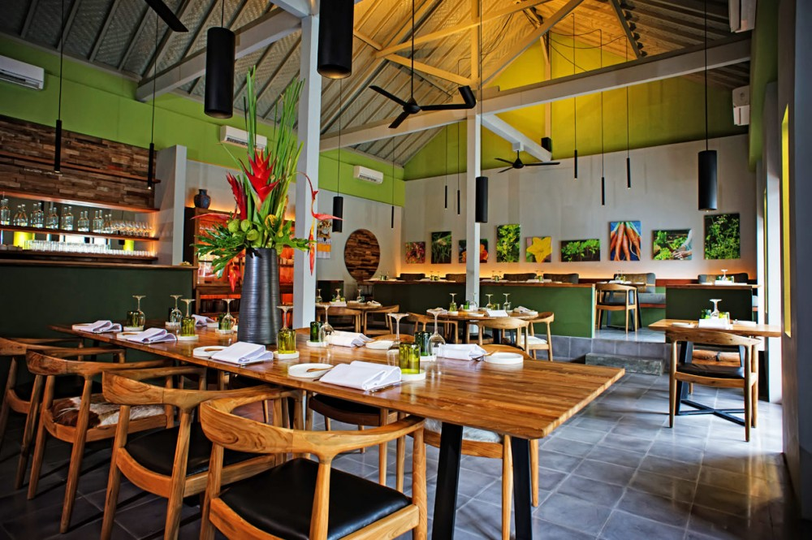

Restoran Ariih
Dibuka pada tahun 2020, Restoran Ariih menyajikan makanan lezat dan menyediakan layanan hebat dalam suasana yang ramah, nyaman dan santai.
Asal mula nama Ariih berasal dari kata ariij yang berarti aroma yang sedap.
Dibuka pada tahun 2020, Restoran Ariih menyajikan makanan lezat dan menyediakan layanan hebat dalam suasana yang ramah, nyaman dan santai.
Asal mula nama Ariih berasal dari kata ariij yang berarti aroma yang sedap.
Berikut list makanan :
Berikut list minuman :